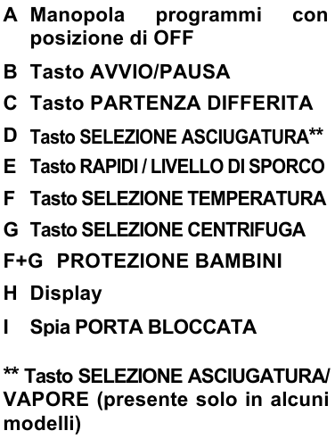
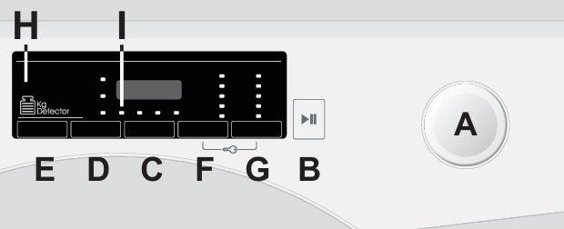
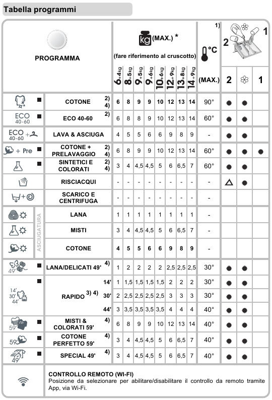

Washer-dryer
Safety
- Do not use the appliance if it is damaged.
- Do not put objects on top of it.
- Keep an eye on washing and drying, especially with children around.
How to use it
- Programme: choose it with knob A. There are three ways of working: washing, drying, and automatic washing + drying (see below).
- Settings: if needed, change temperature and spin on the display with buttons F and G.
- Detergent: in the left compartment; fabric softener, if used, in the middle one. The right compartment is only for pre-wash programmes (then leave the left one empty).
- Start: hold button B for about 1 second.
- End: when the cycle has finished, turn the knob to OFF to open the door.


Washing programmes
- These programmes wash only. You can dry afterwards, either by hand (choose a drying programme with the knob when the wash is over) or automatically (press D after choosing a washing programme).
- Cotton: hard-wearing cotton.
- Eco 40-60: normally soiled cotton.
- Synthetics: synthetic fabrics.
Quick programmes
- These programmes wash only, quickly. Drying can be added afterwards as above.
- Quick 13'/30'/44': all fabrics; small, lightly soiled loads. Press E to change the duration.
- Mixed and coloured 59': mixed fabrics of different colours, not too dirty.
- Cotton 59': medium-soiled cotton; half load is best.
- Special 49': a good wash at medium temperature in 49 minutes; half load is best.
Drying programmes
- These programmes dry only: use them after a wash. Choose the programme with the knob:
- Wool: low temperature; turn the garments inside out first.
- Mixed: low temperature; mixed and synthetic fabrics.
- Cotton: high temperature; cotton, towelling, linen, hemp.
- Then choose the drying level, or a timed drying, by pressing D until it appears on the display:
- Extra dry: towels, bathrobes, bulky loads.
- Iron ready: ready for ironing.
- Wardrobe: garments that need no ironing.
- Time: 120'/90'/60'/30'.
Washing + drying
- Choose a washing or quick programme with the knob, then press D to choose the drying level (or a timed drying) as above. The machine washes and then dries by itself.
Special functions
- Soil level: three washing intensities depending on how dirty the laundry is; it changes the duration of the programme (only with some programmes, see the table). After choosing a washing programme, press E until the level you want appears.
- Child lock: hold F and G together for about 3 seconds.
Programme table

The table is in Italian: cotone = cotton, lava & asciuga = wash & dry, sintetici = synthetics, risciacqui = rinse, scarico e centrifuga = drain and spin, lana = wool, misti = mixed, rapido = quick.
If you have any problem, contact the host, Alessandro.
Lavasciuga
Sicurezza
- Non usare l’apparecchio se è danneggiato.
- Non appoggiarci sopra oggetti.
- Tieni d’occhio lavaggio e asciugatura, soprattutto se ci sono bambini.
Come si usa
- Programma: sceglilo con la manopola A. Ci sono tre modi di lavoro: lavaggio, asciugatura e lavaggio + asciugatura automatici (vedi sotto).
- Impostazioni: se serve, cambia temperatura e centrifuga sul display con i tasti F e G.
- Detersivo: nella vaschetta di sinistra; l’ammorbidente, se lo usi, in quella centrale. La vaschetta di destra serve solo per i programmi con prelavaggio (in quel caso lascia vuota quella di sinistra).
- Avvio: tieni premuto il tasto B per circa 1 secondo.
- Fine: quando il ciclo è finito, ruota la manopola su OFF per aprire l’oblò.
Programmi di lavaggio
- Questi programmi fanno solo il lavaggio. Puoi asciugare dopo, a mano (a lavaggio finito scegli un programma di asciugatura con la manopola) oppure in automatico (premi D dopo aver scelto un programma di lavaggio).
- Cotone: cotone resistente.
- Eco 40-60: cotone normalmente sporco.
- Sintetici: tessuti sintetici.
Programmi rapidi
- Questi programmi fanno solo un lavaggio rapido. L’asciugatura si può aggiungere dopo, come sopra.
- Rapido 13'/30'/44': tutti i tessuti; carichi piccoli e poco sporchi. Premi E per cambiare la durata.
- Misti e colorati 59': tessuti misti di colori diversi, non troppo sporchi.
- Cotone 59': cotone mediamente sporco; meglio a mezzo carico.
- Special 49': un buon lavaggio a media temperatura in 49 minuti; meglio a mezzo carico.
Programmi di asciugatura
- Questi programmi fanno solo l’asciugatura: usali dopo un lavaggio. Scegli il programma con la manopola:
- Lana: bassa temperatura; rovescia prima i capi.
- Misti: bassa temperatura; tessuti misti e sintetici.
- Cotone: alta temperatura; cotone, spugna, lino, canapa.
- Poi scegli il grado di asciugatura, o un’asciugatura a tempo, premendo D finché compare sul display:
- Extra asciutto: spugne, accappatoi, carichi ingombranti.
- Pronto stiro: pronto per la stiratura.
- Armadio: capi che non vanno stirati.
- Tempo: 120'/90'/60'/30'.
Lavaggio + asciugatura
- Scegli un programma di lavaggio o rapido con la manopola, poi premi D per scegliere il grado di asciugatura (o un’asciugatura a tempo) come sopra. La macchina lava e poi asciuga da sola.
Funzioni speciali
- Livello di sporco: tre intensità di lavaggio a seconda di quanto è sporca la biancheria; cambia la durata del programma (solo con alcuni programmi, vedi tabella). Dopo aver scelto un programma di lavaggio, premi E finché compare il livello che vuoi.
- Protezione bambini: tieni premuti insieme F e G per circa 3 secondi.
Tabella programmi
Se riscontri problemi, contatta l’host, Alessandro.
Lavasecadora
Seguridad
- No uses el aparato si está dañado.
- No pongas objetos encima.
- Vigila el lavado y el secado, sobre todo si hay niños.
Cómo se usa
- Programa: elígelo con el mando A. Hay tres modos de trabajo: lavado, secado y lavado + secado automáticos (ver más abajo).
- Ajustes: si hace falta, cambia la temperatura y el centrifugado en la pantalla con los botones F y G.
- Detergente: en el compartimento izquierdo; el suavizante, si lo usas, en el central. El compartimento derecho es solo para los programas con prelavado (en ese caso deja vacío el izquierdo).
- Inicio: mantén pulsado el botón B durante 1 segundo aproximadamente.
- Fin: cuando termine el ciclo, gira el mando a OFF para abrir la puerta.
Los esquemas están en italiano; las letras A-G son las mismas.
Programas de lavado
- Estos programas solo lavan. Puedes secar después, a mano (al terminar el lavado elige un programa de secado con el mando) o de forma automática (pulsa D después de elegir un programa de lavado).
- Algodón: algodón resistente.
- Eco 40-60: algodón con suciedad normal.
- Sintéticos: tejidos sintéticos.
Programas rápidos
- Estos programas solo hacen un lavado rápido. El secado se puede añadir después, como arriba.
- Rápido 13'/30'/44': todos los tejidos; cargas pequeñas y poco sucias. Pulsa E para cambiar la duración.
- Mixtos y colores 59': tejidos mixtos de colores distintos, no muy sucios.
- Algodón 59': algodón con suciedad media; mejor a media carga.
- Special 49': un buen lavado a temperatura media en 49 minutos; mejor a media carga.
Programas de secado
- Estos programas solo secan: úsalos después de un lavado. Elige el programa con el mando:
- Lana: baja temperatura; da la vuelta a las prendas antes.
- Mixtos: baja temperatura; tejidos mixtos y sintéticos.
- Algodón: alta temperatura; algodón, rizo, lino, cáñamo.
- Luego elige el nivel de secado, o un secado por tiempo, pulsando D hasta que aparezca en la pantalla:
- Extra seco: toallas, albornoces, cargas voluminosas.
- Listo para planchar: listo para la plancha.
- Armario: prendas que no hay que planchar.
- Tiempo: 120'/90'/60'/30'.
Lavado + secado
- Elige un programa de lavado o rápido con el mando y luego pulsa D para elegir el nivel de secado (o un secado por tiempo) como arriba. La máquina lava y luego seca sola.
Funciones especiales
- Nivel de suciedad: tres intensidades de lavado según lo sucia que esté la ropa; cambia la duración del programa (solo con algunos programas, ver la tabla). Después de elegir un programa de lavado, pulsa E hasta que aparezca el nivel que quieres.
- Bloqueo infantil: mantén pulsados a la vez F y G durante unos 3 segundos.
Tabla de programas
La tabla está en italiano: cotone = algodón, lava & asciuga = lava y seca, sintetici = sintéticos, risciacqui = aclarados, scarico e centrifuga = desagüe y centrifugado, lana = lana, misti = mixtos, rapido = rápido.
Si tienes algún problema, contacta con el anfitrión, Alessandro.
Lave-linge séchant
Sécurité
- N’utilisez pas l’appareil s’il est endommagé.
- Ne posez pas d’objets dessus.
- Surveillez le lavage et le séchage, surtout s’il y a des enfants.
Comment l’utiliser
- Programme : choisissez-le avec le bouton A. Il y a trois modes de fonctionnement : lavage, séchage et lavage + séchage automatiques (voir ci-dessous).
- Réglages : si besoin, changez la température et l’essorage sur l’écran avec les touches F et G.
- Lessive : dans le bac de gauche ; l’adoucissant, si vous en utilisez, dans le bac central. Le bac de droite sert uniquement aux programmes avec prélavage (dans ce cas, laissez vide celui de gauche).
- Démarrage : maintenez la touche B enfoncée environ 1 seconde.
- Fin : quand le cycle est terminé, tournez le bouton sur OFF pour ouvrir le hublot.
Les schémas sont en italien ; les lettres A-G sont les mêmes.
Programmes de lavage
- Ces programmes font uniquement le lavage. Vous pouvez sécher ensuite, à la main (une fois le lavage terminé, choisissez un programme de séchage avec le bouton) ou automatiquement (appuyez sur D après avoir choisi un programme de lavage).
- Coton : coton résistant.
- Eco 40-60 : coton normalement sale.
- Synthétiques : tissus synthétiques.
Programmes rapides
- Ces programmes font uniquement un lavage rapide. Le séchage peut être ajouté ensuite, comme ci-dessus.
- Rapide 13'/30'/44' : tous les tissus ; petites charges peu sales. Appuyez sur E pour changer la durée.
- Mixtes et couleurs 59' : tissus mixtes de couleurs différentes, pas trop sales.
- Coton 59' : coton moyennement sale ; de préférence à demi-charge.
- Special 49' : un bon lavage à température moyenne en 49 minutes ; de préférence à demi-charge.
Programmes de séchage
- Ces programmes font uniquement le séchage : utilisez-les après un lavage. Choisissez le programme avec le bouton :
- Laine : basse température ; retournez d’abord les vêtements.
- Mixtes : basse température ; tissus mixtes et synthétiques.
- Coton : haute température ; coton, éponge, lin, chanvre.
- Puis choisissez le degré de séchage, ou un séchage minuté, en appuyant sur D jusqu’à ce qu’il apparaisse sur l’écran :
- Extra sec : serviettes éponge, peignoirs, charges volumineuses.
- Prêt à repasser : prêt pour le repassage.
- Prêt à ranger : vêtements qui ne se repassent pas.
- Minuté : 120'/90'/60'/30'.
Lavage + séchage
- Choisissez un programme de lavage ou rapide avec le bouton, puis appuyez sur D pour choisir le degré de séchage (ou un séchage minuté) comme ci-dessus. La machine lave puis sèche toute seule.
Fonctions spéciales
- Niveau de salissure : trois intensités de lavage selon le degré de saleté du linge ; cela change la durée du programme (seulement avec certains programmes, voir tableau). Après avoir choisi un programme de lavage, appuyez sur E jusqu’à ce que le niveau voulu apparaisse.
- Sécurité enfants : maintenez enfoncées ensemble F et G pendant environ 3 secondes.
Tableau des programmes
Le tableau est en italien : cotone = coton, lava & asciuga = lave et sèche, sintetici = synthétiques, risciacqui = rinçages, scarico e centrifuga = vidange et essorage, lana = laine, misti = mixtes, rapido = rapide.
En cas de problème, contactez l’hôte, Alessandro.